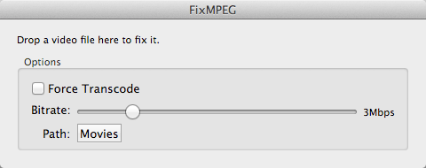
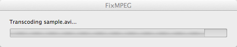

FixMpeg is a simple front end to ffmpeg that will convert video to play on the Cablecast SX video servers.
FixMpeg is a simple front end to ffmpeg that will convert the audio format and sample rate in an mpeg2 file (.mpg). It is intended to aid the migration of files to the SX Video Servers from Tightrope Media Systems. It will not touch the video if it doesn't have to and it will convert the audio in a file if it is not correct to stereo MPEG1 layer 2 audio (typical uses are to convert from the wrong sample rate -- 44.1kHz to 48kHz or to convert AC3 audio).
Simply extract the zip file, double click the FixMpeg.app and then drag a batch of mpeg2 files onto the window. Files that are already correct will be copied, files that can be converted will be converted and you will get a message about any incompatible files.
You can click the path button to point it at your desired content path, where it will place any output files. There's no installer, just copy the FixMpeg.app to your Applications folder.

